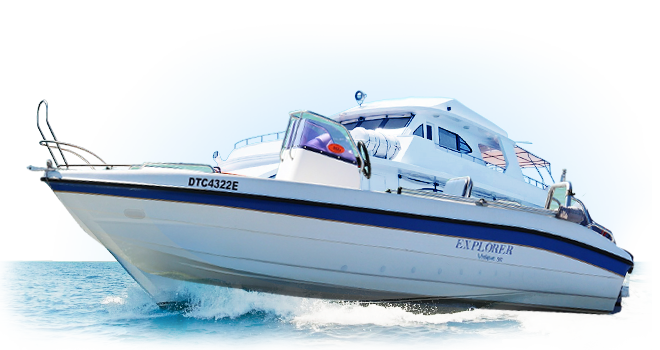

Nautical Converter
Knots is a speed measurement typically used in maritime and aviation. This knots calculator is based on the international nautical mile which is commonly used thoughout the world today. Knots can be converted into Miles Per Hour (MPH), which is a common measurement of speed typically used in non-metric countries for transport such as the USA. To find the equivalent value of Knots in Miles Per Hour or vice versa, use the calculator below.
JavaScript Nautical Converter

© 2015 Ahmed Awada. All Rights Reserved | Design by
W3layouts